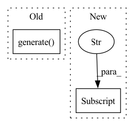

Pattern ID :23201
Before Change
encoded_input = tokenizer.encode(input_text, return_tensors="pt")
encoded_input = encoded_input.to(device)
output = model.generate(input_ids=encoded_input, num_return_sequences=1)
if is_list:
return [tokenizer.decode(tokens, skip_special_tokens=True) for tokens in output]
else:After Change
t_checkpoint = tokenizer_name
// Name according to huggingface
kwargs["num_return_sequences"] = kwargs.pop("num_generations", 1)
return model_generate(model, tokenizer, device, input_text, **kwargs)
else:In pattern: SUPERPATTERN
Frequency: 5
Non-data size: 2
Instances Fragment ID: 73306362
Project Name: kiri-ai/kiri
Commit Name: 300da0a21087ca27863518a5c2056c2d4b5791cd
Time: 2021-01-20
Author: ojasaarkristo@gmail.com
File Name: kiri/models/generation.py
M Class Name: AnonimousClass
N Class Name: AnonimousClass
M Method Name: generate(6)
N Method Name: generate(5)
M Parent Class:
N Parent Class:
M File Name: kiri/models/generation.py
N File Name: kiri/models/generation.py
M Start Line: 10
M End Line: 51
N Start Line: 78
N End Line: 133
Before Change
// Run model
with torch.no_grad():
outputs = self.model.generate( pixels, max_length=16, num_beams=4, return_dict_in_generate=True) .sequences
// Tokenize outputs into text results
captions = self.tokenizer.batch_decode(outputs, skip_special_tokens=True)After Change
// Get and clean captions
captions = []
for result in self.pipeline(values):
text = " ".join([r["generated_text"] for r in result]).strip()
captions.append(text)
// Return single element if single element passed in Fragment ID: 73306363
Project Name: neuml/txtai
Commit Name: f3a185c33967d3568f2a072b65be7bf97e16e60b
Time: 2022-10-16
Author: 561939+davidmezzetti@users.noreply.github.com
File Name: src/python/txtai/pipeline/image/caption.py
M Class Name: Caption
N Class Name: Caption
M Method Name: __call__(2)
N Method Name: __call__(2)
M Parent Class: HFPipeline
N Parent Class: HFModel
M File Name: src/python/txtai/pipeline/image/caption.py
N File Name: src/python/txtai/pipeline/image/caption.py
M Start Line: 72
M End Line: 81
N Start Line: 46
N End Line: 55
Before Change
for pap in tqdm(training_data_papers):
if len(pap["Abstract"].split())>10:
qgen.paper = pap
qgen.generate()
if qgen.queries:
for qry in qgen.queries:
training_data_dict["Abstract"].append(pap["Abstract"])
training_data_dict["Queries"].append(qry)After Change
def prepare_data(self):
keys = list(self.papers.keys())
messages = [self.papers[fname]["messages"] for fname in keys]
messages = [elt for elt2 in messages for elt in elt2]
titles = [self.papers[fname]["title"] for fname in keys if "title" in self.papers[fname]]
Fragment ID: 73306360
Project Name: yassinekdi/naimai
Commit Name: f4e3f08db88e7f428f75df1aca4edddf6b5a7772
Time: 2022-07-12
Author: keptsa@yahoo.fr
File Name: models/papers_classification/semantic_search.py
M Class Name: Search_Model
N Class Name: Search_Model
M Method Name: prepare_data(1)
N Method Name: prepare_data(1)
M Parent Class:
N Parent Class:
M File Name: models/papers_classification/semantic_search.py
N File Name: models/papers_classification/semantic_search.py
M Start Line: 39
M End Line: 49
N Start Line: 25
N End Line: 38
Before Change
print(json.dumps(dataset_config.available_params, indent=4, sort_keys=True))
zpy.preview(dataset_config)
zpy.generate( "can_v7 test.5", dataset_config, num_datapoints=10, materialize=True)
def test_2():
zpy.init(After Change
dataset_config.set("run\\.padding_style", "square")
print(dataset_config.config)
previews = zpy.preview(dataset_config)
urls = [preview["url"] for preview in previews]
print(json.dumps(urls, indent=4, sort_keys=True))
Fragment ID: 73306355
Project Name: zumolabs/zpy
Commit Name: e10dae4fa12b23e219d09790b87146089d5e2625
Time: 2021-07-13
Author: kory@zumolabs.ai
File Name: client/test.py
M Class Name: AnonimousClass
N Class Name: AnonimousClass
M Method Name: test_1(0)
N Method Name: test_1(0)
M Parent Class:
N Parent Class:
M File Name: client/test.py
N File Name: client/test.py
M Start Line: 46
M End Line: 50
N Start Line: 42
N End Line: 47